Web 控制台
任何设备访问：手机 / 平板 / PC
远程发布、监控、验收一站完成，不必守在跑任务的机器旁。
✓任务调度 · 草稿、定时、前置依赖、批量与状态流转
✓实时对话 · 指定 Worker + 项目分支，多轮远程协作
✓验收闭环 · PR 状态、合并检测、失败重试、取消在途
✓权限协作 · viewer / commenter / publisher / admin
Web 端负责发布与监控，控制面负责持久化与实时推送，桌面 Worker 在本地真正跑 Claude Code。
任何设备访问：手机 / 平板 / PC
远程发布、监控、验收一站完成，不必守在跑任务的机器旁。
PostgreSQL 唯一权威 + 可选实时线
任务、会话、Worker 心跳、权限与 Claude Code transcript 全部可追溯。
Windows / macOS 本地运行
连接本机 Claude Code 终端，认领队列并在独立 worktree 中执行。
发布到中枢 → 落库并推送 → 本地认领执行 —— 蓝点是运行中的任务，到仓库时变绿即合并成功。
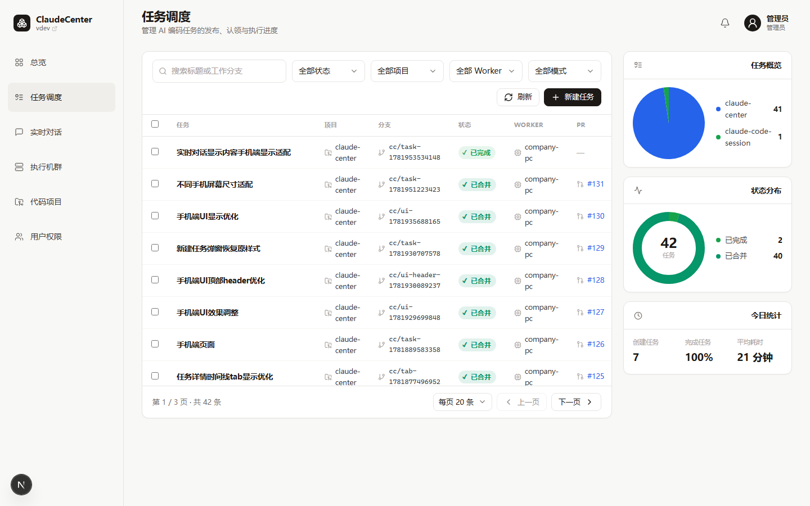
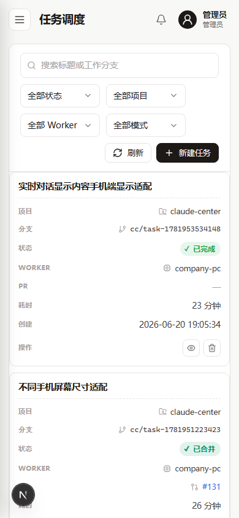
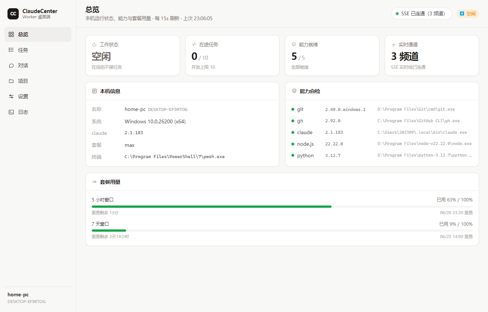
Web 控制台、手机端、桌面 Worker —— 三端同一套 Claude Light 设计语言。
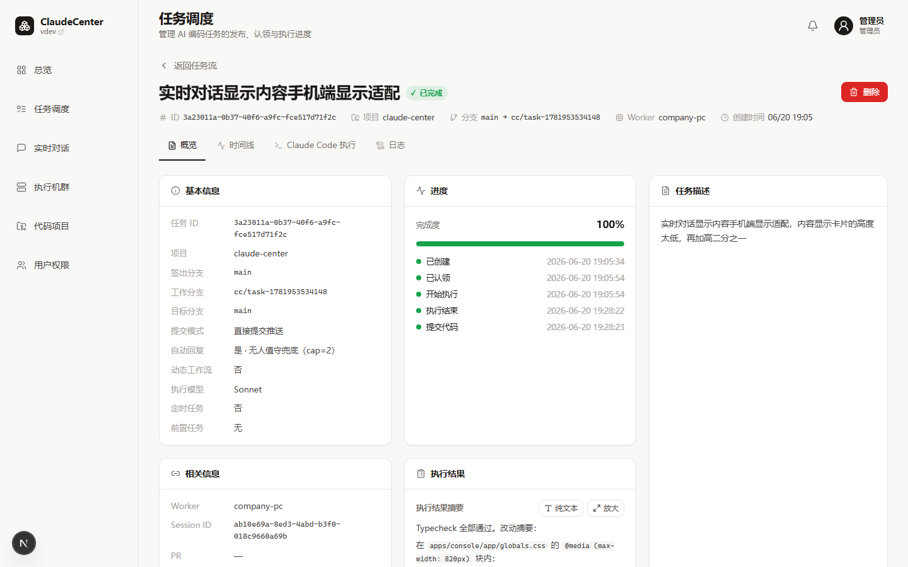
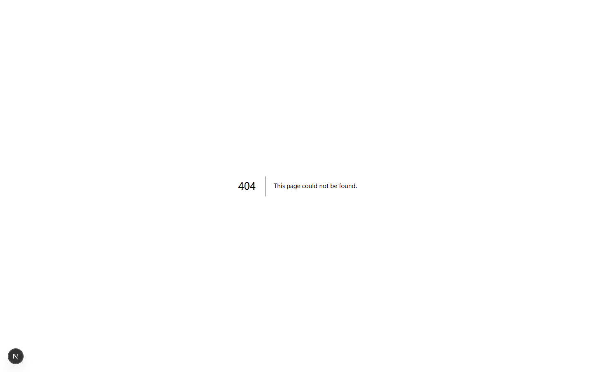
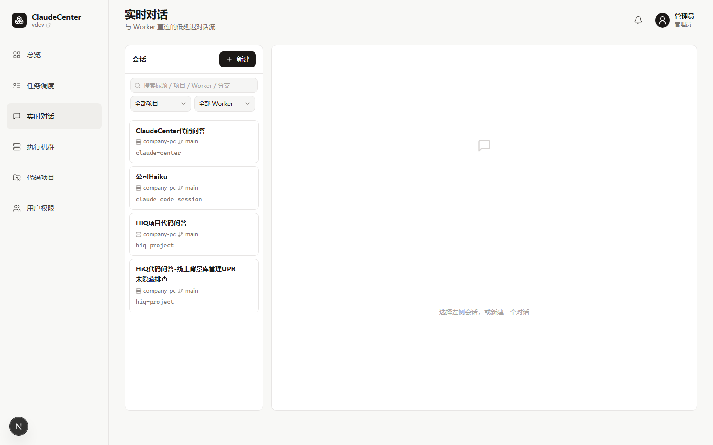
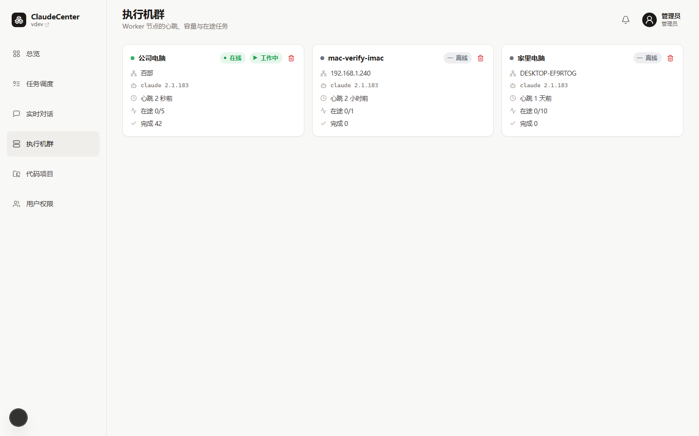
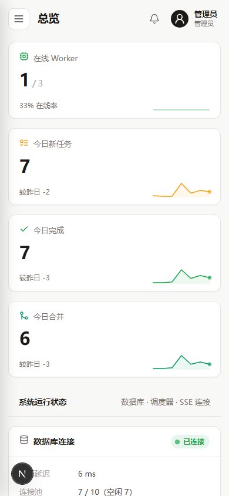
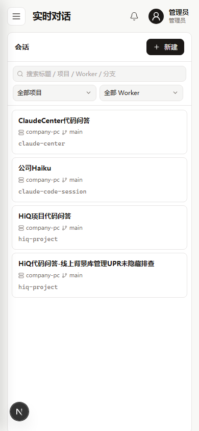
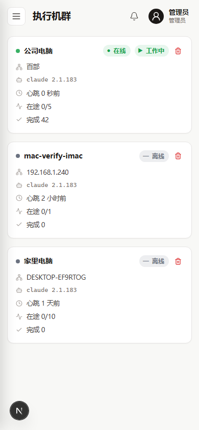
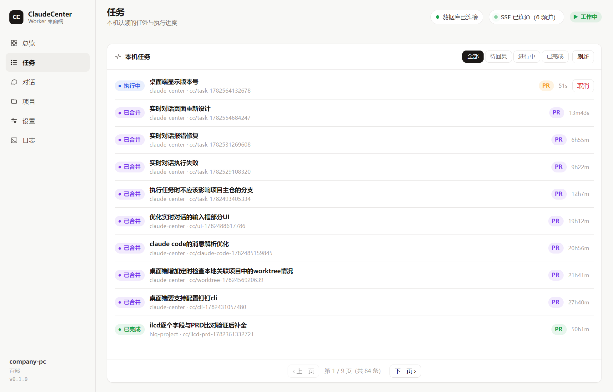
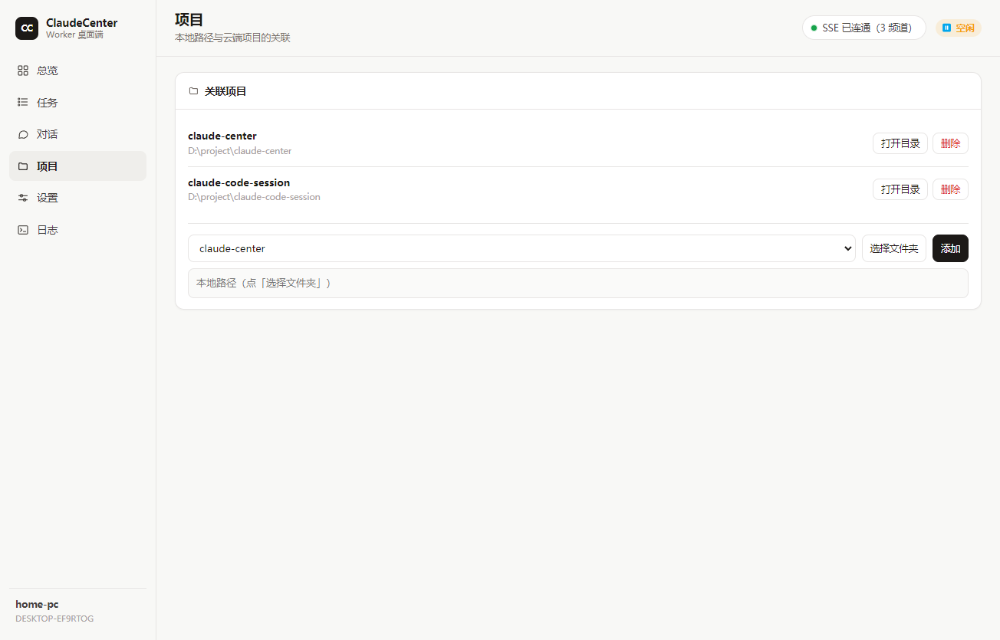
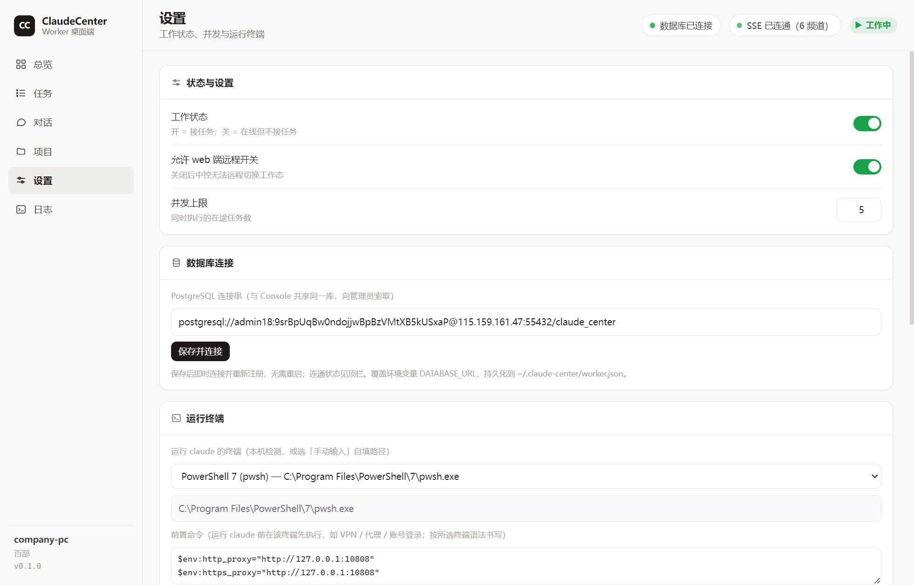